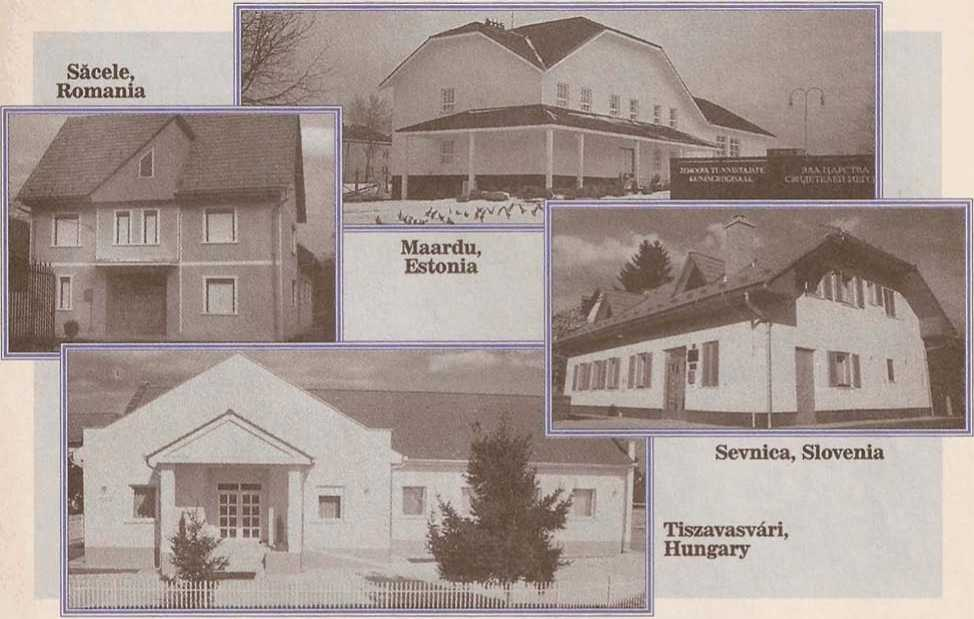
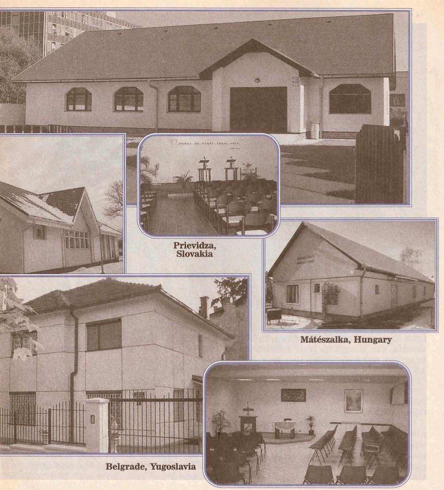
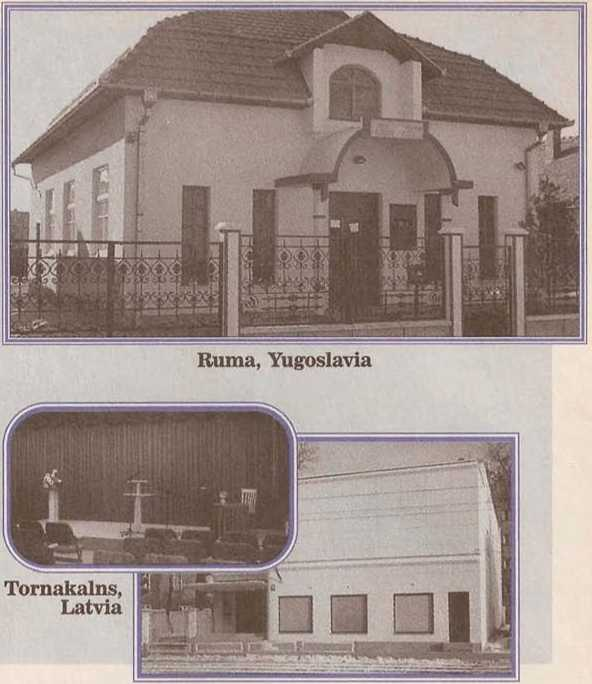

Our kingdom ministry
September 1999 For United States of America km-E Us 9/99 Vol. 42, No. 9
Are You Working With a Purpose?
‘Jehovah is the God of purpose. (Isa. 55:10, 11) We are exhorted to imitate him. (Eph. 5:1) This certainly ought to hold true of the way in which we perform our ministry. So the question is appropriate: “Are you working with a purpose?”
-
2 Your preaching from door to door, witnessing informally, and distributing literature is all part of a purposeful ministry. But remember that our commission involves not only preaching but also disciple making. (Matt. 28: 19, 20) After sowing seeds of Kingdom truth, we need to return to water them and provide regular care as we look to Jehovah to bring the increase. (1 Cor. 3:6) We need to be conscientious about making return visits and starting Bible studies.
-
3 Expand Your Ministry: There is always a good feeling when you can look back on what you did in the service and say to yourself: “I accomplished what I set out to do.” As recorded at 2 Timothy 4:5, Paul urged: “Fully accomplish your ministry.” That includes expanding your efforts to follow up on all the interest found. In your weekly service schedule, plan a definite time to make return visits. Work toward the goal of trying to start Bible studies with those inclined toward righteousness. This should be your purpose when sharing in the ministry.
-
4 Ask publishers how they felt when they saw their Bible students get baptized at an assembly. They rejoiced, possibly as much as the ones who got baptized. They had accomplished a grand purpose! One disciple maker expressed it this way: “Making disciples means making more praisers of Jehovah. It means life for those who accept the truth. I just love teaching the truth to others—it’s so beautiful! ... Many of those who have come to love Jehovah have become my very dear friends.”
-
5 Imagine being able to assist a person to become a dedicated servant of Jehovah! What a cause for joy! Such fruitage results from having worked with a purpose in the ministry.—Col. 4:17.
Parents—Set a Good Example for Your Children
-
1 God’s Word tells us that “the father [and the mother] of a righteous one will without fail be joyful.” (Prov. 23:24, 25) What a blessing for parents who have set a good example for their offspring! A member of a Branch Committee said of his parents: “The truth was their whole life, and I wanted to make it my whole life too.” What should children see in their parents?
-
2 Good Manners and Deep Respect: It is the parents’ responsibility to instill wholesome traits in their children. Good manners are learned, not simply by verbal instruction, but by observation and imitation. Therefore, what manners do you display? Do your children hear you say “excuse me,” “please,” and “thank you”? In the family, do you treat one another with deep respect? Do you pay attention when others talk? Do you listen when your children speak to you? Are these good traits displayed both at the Kingdom Hall and in the privacy of the home?
-
3 Strong Spirituality and Zealous Activity: A brother who has spent more than 50 years in full-time service recalls: “My mother and father were a wonderful example in their appreciation for meetings and in their zeal for the ministry.” How do you demonstrate to your children that you are concerned about maintaining the spirituality of those in your household? Do you consider the daily text together? Do you have a regular family study? Do your children see you reading the Bible and the Society’s publications? What do they hear when you pray on behalf of the family? Do you engage in upbuilding spiritual conversation with your children, discussing positive things about the truth and the congregation? Are you eager to attend all the meetings and to share in the field ministry as a family?
-
4 Parents, reflect on the example you are setting for your children. Make it an excellent one, and they will treasure it all their lives. A traveling overseer’s wife, now in her 70’s, said: “I am still benefiting from the good example of my loving Christian parents. And it is my earnest prayer that I will prove my full appreciation for this heritage by using it properly through all the ages to come.”
Service Meetings for September
Week Starting September 6
Song 190
10 mln: Local announcements. Selected Announcements from Our Kingdom Ministry.
17 mln: “Are You Working With a Purpose?” Limit introductory comments to less than a minute, and follow with a questlon-and-answer discussion. Include comments on Our Ministry book, pages 88-9. Encourage all to be consistent and thorough in their ministry.
18 mln: “Parents—Set a Good Example for Your Children." Brief introduction by an elder, followed by a discussion of the article by two brothers who are parents. They express concern about safeguarding their children from the negative traits that they are exposed to at school, by television, and by non-Witness relatives and others. The brothers consider disrespectful attitudes, worldly speech and grooming, and unwholesome entertainment. After reflecting on the need to set a good example, they discuss ways to build up greater enthusiasm for the family study, the congregation meetings, and field service.—See July 1,1999, Watchtower, pages 8-22, and September 22, 1991, Awake!, pages 8-9.
Song 101 and concluding prayer.
Week Starting September 13
Song 171
10 mln: Local announcements. Accounts report.
15 min: How Did We Do Last Year? A talk by the service overseer. Review highlights from the congregation report for the 1999 service year. Give commendation for good things accomplished. Point out areas where Improvement may be needed. Focus on how the congregation has done in meeting attendance and in conducting Bible studies. Outline practical goals for the coming year.
20 mln: “What Will You Say to a Hindu?" Questions and answers. Emphasize the advantage of establishing common ground with a person, and point out where we are likely to agree with a Hindu. Show how the suggested presentations can be adjusted to witness to people of any religious background. Demonstrate a well-prepared presentation of witnessing to a Hindu. For more information on Hinduism, see February 1998 Our Kingdom Ministry Insert; Reasoning book, page 22; and Mankind’s Search for God, chapter 5.
Song 140 and concluding prayer.
Week Starting September 20
Song 193
12 mln: Local announcements and field service experiences.
15 mln: Local needs.
18 mln: Make Good Use of the Creator Book. Talk and demonstrations. The April 1999 Our Kingdom Ministry explained that the Creator book may be offered any time we meet people whoUjdo not believe in God or @ believe In God but have no real concept of who he is or what his qualities and purposes are. The thought-provoking questions and comments on the back cover can be used to stimulate interest in reading the book. Or page 152r can be used to good advantage. A publisher might ask: “Where can we find the very best advice on how to solve our most perplexing problems?” He can show the person how noted authorities have praised Jesus' Sermon on the Mount, ask him to choose one of the seven highlighted points that interests him most, and then read a few of the cited verses. Demonstrate both of these suggestions for offering the Creator book, mentioning the donation arrangement in each presentation. Encourage qll tn. carry the, hook in the field service, being ready to offer it whenever appropriate
Song 17fLand concluding prayer.
Week 'Starting September 27
Song 141
15 mln: Local announcements. Remind publishers to turn in field service reports for September. Encourage all to make plans for a full share in magazine distribution during October. Review some of the suggestions that appeared in the October 1996 Our Kingdom Ministry, page 8, on how to prepare presentations. Using the current magazines, mention some good talking points and demonstrate one or two brief presentations. Show how to mention the donation arrangement to the householder.
15 mln: Question Box. Talk by an elder.
15 mln: “True Worship Is Expanding in Eastern Europe.” Elder conducts questlon-and-answer session. Cite experiences or evidence of increase in countries represented, as reported in recent Yearbooks.
Song 87 and concluding prayer.
Announcements
■ Literature offer for Septamber: Knowledge That Leads to Everlasting Life. October: Individual copies of The Watchtower and Awake! Where interest is found on return visits, subscriptions may be offered. November: What Does God Require of Us? or Knowledge That Leads to Everlasting Life. December: Knowledge That Leads to Everlasting Life with the New World Translation.
■ When in the ministry, you may meet a person who is deaf. If there is a sign language group or congregation functioning in your area, you should follow the direction provided in the Society’s October 15,1998, letter to all congregations in the United States. It explains: “The Please Follow Up form will be used to make a note of people, whether In your congregation’s territory or not, who speak another language, including sign language. Generally, It should be used for this purpose even if the individual does not show interest in the Kingdom message.... After filling out the Please Follow Up form, it should be given directly to the congregation secretary or placed in the box for field service reports at the Kingdom Hall.” With each publisher being alert to cooperate in this way, sign language congregations will be able to compile a list of deaf people located in their area.
(Continued on p. 7, col. T)
|
June Service Report |
|
Av |
Av Av Av |
|
Number of: |
Hrs. |
Mags. R.V. Bi.St. |
|
Sp'l Pios. |
134 121.3 101.2 53.6 4.7 |
|
Pios. |
76,575 |
61.6 |
44.1 20.6 1.6 |
|
Aux. Pios. |
33,440 |
43.5 |
37.0 12.2 0.8 |
|
Pubs. |
800,181 |
9.2 |
8.0 3.4 0.3 |
|
TOTAL |
910,330 | |
Baptized: 4,068 |
|
The combined total of 110,015 regular and auxiliary pioneers is the highest number ever reported for the |
|
month of June! | | |
® 1999 Walch Tower Bible and Tract Society ol Pennsylvania. All rights reserved. Our Kingdom Ministry (ISSN 1067-7259) is published monthly by Watchtower Bible and Tract Society of New Ihrk, Inc., and International Bible Students Association, 25 Columbia Heights. Brooklyn. NY 11201-2483. Periodicals Postage Paid at Brooklyn. NY. and at additional mailing offices. POSTMASTER: Send address changes to Our Kingdom Ministry, c/o Watchtower. 25 Columbia Heights. Brooklyn. NY 11201-2483. Printed in USA
True Worship Is Expanding in Eastern Europe

-
1 First-century Christians were zealous Kingdom preachers. They rejoiced when the congregations ‘increased in number from day to day.’ (Acts 16:5) Their bold preaching took true worship into Asia, Africa, and Europe, resulting in a rich harvest of believers. ,
-
2 In this time of the end, true worship continues to expand, particularly in the lands of Eastern Europe. In countries where we were under government restrictions until the early 1990’s, we are now experiencing outstanding increases. The 1999 Yearbook reveals that two of such countries, Russia and Ukraine, each reported over 100,000 publishers sharing in the public ministry. In the 15 territories of the former Soviet Union, since 1991 over 220,000 persons have dedicated themselves to Jehovah and been baptized! This rapid growth has made it necessary to construct many new Kingdom Halls and Assembly Halls as well as to expand a number of branch facilities.
-
3 As announced in Our Kingdom Ministry of March 1997, a portion of the Society Kingdom Hall Fund is now being used to provide loans to congregations in lands where a very urgent need exists for more Kingdom Halls but where there are limited resources and severe economic problems. Between March 1996 and October 1998, the Society gave approval to 359 Kingdom Hall loan requests from branch offices overseeing 11 Eastern
European lands. Contributed funds are being used to purchase land and materials for the construction of new Kingdom Halls and to assist congregations in remodeling existing facilities. The pictures shown here give us an idea of how contributions to the Society Kingdom Hall Fund in the United States and in other countries have benefited our brothers in Eastern Europe.

Mateszalka, Hungary
Belgrade, Yugoslavia
Prievidza, Slovakia
-
4 During 1998, Bulgaria experienced a 12-percent increase, and the brothers were thrilled when their first Kingdom Hall was dedicated in April of that year. Croatia enjoyed a 4-percent increase, and at present the brothers there are constructing more Kingdom Halls, to advance true worship. In Hungary some 80 Kingdom Halls are being used by 144 congregations. This means that of the 235

Vranov nad Topl’ou, Slovakia

congregations in that country, 61 percent have their own place of worship. In Macedonia the Kingdom Hall construction program has completed two new halls, and more are under way. In the summer of 1999, a double Kingdom Hall was completed in the capital city of Skopje. This hall has the capacity to serve at least six congregations.
-
5 Last year in Russia, on an average, over 260 persons were baptized each week! Following the model used in other countries, the Russia branch has now organized 12 Regional Building Committees throughout their vast territory, to support future Kingdom Hall construction projects. In the northern part of St. Petersburg, construction is under way on that country’s first Assembly Hall, which will seat 1,600. The facility will also include five Kingdom Halls with 200 seats each. To serve the spiritual needs of our brothers and many interested ones in Ukraine, 84 Kingdom Halls have been completed and 80 are under construction.
-
6 Does not this increase in Eastern Europe bring joy to our hearts? No matter where we live, the expansion of true worship reminds us that God is not partial and that his patience will mean salvation for “a great crowd.” (Rev. 7:9; 2 Pet. 3:9) What a privilege is ours to have a small share in contributing toward the spiritual growth of others, even those in faraway lands! Proverbs 28:27 assures us that “he that is giving to the one of little means will have no want.” Our willingness to help cover these construction costs results in “an equalizing” of material things, enabling all to experience the happiness that comes from giving and the joy that results from seeing true worship expand worldwide.—2 Cor. 8:14, 15; Acts 20:35.
Announcements (Continued)
-
■ The presiding overseer or someone designated by him should audit the congregation’s accounts on September 1 or as soon as possible thereafter. When this has been done, make an announcement to the congregation after the next accounts report is read.
-
■ U.S. Selective Service regulations require that all men register at the post office when reaching 18 years of age. All those required to do so should take care of the matter promptly, viewing it as a Christian’s obligation to the superior authorities. Elders will want to have this in mind and give appropriate reminders to young brothers nearing the age of 18. Questions as to the young Christian's responsibilities in this regard may be answered by the elders.
-
■ The elders are reminded to follow through on instructions given on pages 21-3 of the April 15,1991, Watchtower, regarding any disfellowshlpped or disassociated ones who may be inclined toward becoming reinstated.
-
■ It is important that groups of 20 or more persons planning to visit the Society’s facilities first correspond by mail with the Central Tour Desk at 100 Watchtower Drive, Patterson, NY 12563-9204. The Central Tour Desk will care for groups that will be visiting the Society’s facilities at Brooklyn, Patterson, and Wallkill, New York, or the Assembly Hall at Jersey City, New Jersey. Please send Information on the number coming and the dates and times for visiting each location. The Society will provide a description of the tours that are available as well as a map giving directions to each location. LODGING INFORMATION HAS BEEN SENT TO THE CONGREGATION ELDERS AND MAY BE OBTAINED FROM THE CONGREGATION SECRETARY. Before your visit, please review the March 1998 Our Kingdom Ministry Question Box.
■ Those associated with a congregation should send all new and renewal subscriptions for The Watchtower and Awake!, Including their personal subscriptions, through the congregation. ■ The Society does not fill Individual publisher’s requests for literature. The presiding overseer should arrange for an announcement to be made each month before the congregation monthly request for literature is sent to the Society so that all Interested In obtaining personal literature items may advise the brother handling literature.
Please keep in mind which publications are special-request items.
-
■ The 1998 “God’s Way of Life” District and International Conventions were truly a blessing for all In attendance. Among those present were 2,764 missionaries and international servants who were able to visit their home countries with the aid of generous donations from the congregations. Support of this arrangement is very much appreciated. With the conclusion of these conventions, the remaining funds donated for this purpose will be used to support the worldwide preaching work. ■ New Publications Available:
A Book for All People —Danish
Knowledge That Leads to Everlasting
Life —Luvale
Noah—He Walked With God
—Greek, Thai The Bible—Accurate History, Reliable
Prophecy —Albanian
The Bible—Its Power in Your Life
—Albanian, Arabic
The Bible—Mankind’s Oldest Modem Book —Albanian
-
■ Beginning with the September 1, 1999, issue, The Watchtower will be available in Kazakh as a monthly edition.
Question Box
In the modern world, “time and unforeseen occurrence” often combine to create a medical emergency, including pressure to take a blood transfusion. (Eccl. 9:11) So that we can prepare for such an eventuality, Jehovah has provided help in many ways through his organization, but he expects us to do our part. Below is a checklist to help you.
-
• Carry the current Advance Medical Directive/Release card at all times.
-
• See that your children carry the current Identity Card.
-
• Review the September 1992 Our Kingdom Ministry insert, rehearsing how to reason with doctors and judges regarding treatment for your child.
-
• Review articles on blood fractions and alternatives to blood. (Recommended: The Watchtower, October 1, 1994, page 31; June 1,1990, pages 30-1; March 1, 1989, pages 30-1; Awake!, December 8, 1994, pages 23-7; August 8, 1993, pages 22-5; November 22, 1991, page 10; and Our Kingdom Ministry, September 1992 and November 1990 inserts. Keep them in a folder for ready access.)
-
• Decide conscientiously if you can allow use of machines that circulate blood outside the body or if you can accept products containing blood fractions. (If you complete a health-care durable power of attorney, or proxy, form—which is advisable—you will see that provision is made on the form for you to declare your own informed choice of treatment.)
-
• Before going to the hospital, if at all possible, let the elders know so that they can support you and contact the Hospital Liaison Committee (HLC) if necessary. In the case of a young child, ask the elders to notify the HLC early.
Make Clear Your Refusal of Blood: Reports show that some brothers and sisters wait until the last minute to tell the treating doctors that they do not want blood. This is unfair to medical personnel and puts you at risk of being transfused. If the doctors know your convictions and your wishes are backed up by signed documents that state your specific directions, it helps them to proceed without delay and often gives them additional options for nonblood medical treatment.
Since a medical emergency can occur at any time, usually when you least expect it, take steps now to safeguard yourself and your children from a blood transfusion.—Prov. 16:20; 22:3.
What Will You Say to a Hindu?
-
1 As you may know, there are many Hindus living in various lands, including this country. This means that sooner or later you may meet a Hindu in the course of your ministry. When you do, how will you handle the call?
-
2 Remember These Points: Missionaries who have successfully witnessed to Hindus say that it is not necessary to make a deep study of Hinduism in order to give an effective witness. A simple, tactful presentation of the truth often brings a positive response. Ask to speak to the head of the household first. If his response is favorable, it will be easier to witness to other family members. At the outset avoid suggesting that you are bringing a message that is superior to what the householder believes or that you want to discuss the only true God or the oldest sacred writings. Since many Hindus consider the Bible to be a Western book, you can break down prejudice by explaining that it does not promote colonialism or the superiority of one race over another.
-
3 Use the Right Tools: Two brochures have been prepared specifically with Hindus in mind. Why Should We Worship God in Love and Truth? is printed in Gujarati and Punjabi. Our Problems—Who Will Help Us Solve Them? is printed in 11 additional Indian languages. Both are available in English. The brochures “Look! I Am Making All Things New” and Does God Really Care About Us? have also proved effective when witnessing to those of Hindu background. The Require brochure and the Knowledge book can be used successfully to conduct Bible studies.
-
4 Establish Common Ground: It is not difficult to find common ground with Hindus. They believe that we are living in a time when wickedness is at its peak and that God will rid the world of its problems through a great catastrophe to be followed by an era of truth. You can see how easily these beliefs can be related to the Bible’s teachings about the last days, the great tribulation, and the coming new world. Since most Hindus view life as a series of problems for which there are no solutions, they are interested in the topics of family life, crime and safety, and what happens at death. Here are two sample presentations that you might try.
-
5 This may appeal to a family man:
■ “I am visiting people who are concerned about the state of family life in many lands today. What do you think will help keep the family together? [Allow for response.] Some people know what the Hindu scriptures say about the family, but they have never had the opportunity to compare this with what the Bible has to say on the subject. I would like to share with you this thought at Co-lossians 3:12-14.” After reading the scripture, show the householder chapter 15 of the Knowledge book and say: “I would be pleased to spend a little time reading this chapter with you.”
■ “No doubt you believe in God. What do you think God’s purpose is for us?” Allow for a response. Then read Genesis 1: 28, and say: “In many places the earth is overpopulated and plagued with problems. Do you think the Creator would be willing to help us solve our problems?” After hearing the response, turn to an appropriate publication.
-
7 Enjoy Positive Results: A 22-year-old Hindu man approached a sister who was witnessing in a market and asked for a Bible study. He explained to her that eight years earlier he had overheard a Bible discussion between his mother and her. Although he had been impressed by the Bible’s practical answers to mankind’s problems, his mother was not interested and he had felt that he was too young to pursue the truth on his own. Now as an adult, he wanted to learn more. The young man wasted no time. In only 23 days, he completed his study of the Knowledge book, and just four months after he had met the sister at the market, he asked to be baptized!
-
8 A brother started a study with a Hindu man whom he met on a train. The man was experiencing difficulties in his marriage. He also had a drinking problem. The man agreed to have the Witness call on him and share the Bible’s advice on family life. The Bible’s moral teachings appealed to him, and he agreed to a Bible study. He and his family began attending meetings together. Later they shared the truth with friends and relatives. So far, six of these people have accepted the truth!
-
9 God’s will is that “all sorts of men should be saved and come to an accurate knowledge of truth.” (1 Tim. 2:4) That includes men and women who profess a non-Christian religion, such as Hinduism. If there are Hindus in your territory, why not visit them soon and use some of the suggestions presented in this article?
8